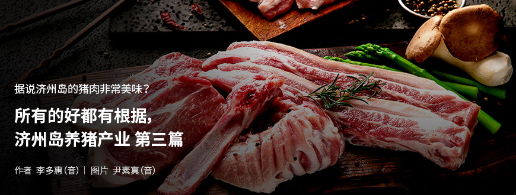
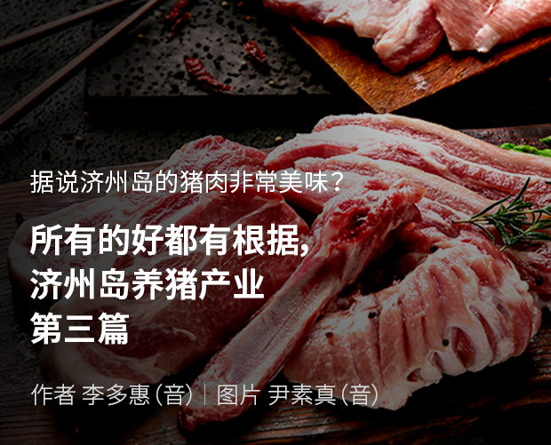

기획취재콘텐츠
- Home
- 제주라이프
- 기획취재콘텐츠
所有的好都有根据，济州岛养猪产业 第三篇새로운 글




先进化的养猪产业，济州岛东部畜产务农合作社
智能畜舍、环保、生态循环耕作法、第六产业领军企业，这些都是济州岛东部畜产务农合作社（代表金泰宇（音），以下简称“东部畜产”）缺一不可的代名词。东部畜产成立于1997年1月，在济州岛单一规模的农场中规模最大，占地35,000坪（11.55万平方米），是饲养着21,000头猪的济州岛养猪农户。
- 东部畜产全貌，在猪舍周边种植了树木，风景犹如树木园。
您不能错过济州岛上的传统猪肉菜。ⓒ东部畜产 -
您不能错过济州岛上的传统猪肉菜。ⓒ东部畜产 -
东部畜产明白养猪环境和饲料对猪肉的味道和品质的影响不亚于种猪，因此，在营造良好的饲料和环境方面倾注了许多努力。坚持使用着无抗生素认证的混合饲料与用牧草制成的绿色饲料。维持较低的饲养密度，提供没有压力的舒适环境。同时，使猪的数量与周边树木的数量对等，营造出整洁的周边环境。得益于这些努力，东部畜产通过环保、生态循环耕作法于2009年被指定为了HACCP及环保型畜产农场。此后又在2013年7月获得了绿色农产品（无抗生素畜产品）认证。
通过2017年构建的智能畜舍系统，打下了生产高品质的猪肉，同时确保经济性的基础。目前东部畜产引进的设施有环境管理器、哺乳母猪自动饲喂器及冷气机。环境管理器可以显示猪舍的温度和湿度，当脱离了适当的温度和湿度，就会通过智能手机告知。哺乳母猪自动饲喂器是通过按钮给母猪饲喂的设备，可以观察母猪的饮食行为、检查其健康状态等。为了防止猪在夏季因炎热而死亡，还引进了冷气机。
- 东部畜产猪舍内部，通过智能系统来管理饲养环境和饲料分配。 ⓒ东部畜产 -
通过智能畜产系统，可以利用计算机来掌握需要重点管理的猪和畜舍，大幅减少了管理时间。由于节省了时间和精力，因此可以更加集中于品质管理，从而减少死亡率，增加出栏体重，提高生产效率。
- 济州岛东部畜产科长玄镇协（音）
随着引进智能畜舍系统，简便饲养环境管理，MSY（每年每头母猪生产的猪中体重达到出栏体重后销售的数量）体重也增加了0.3~0.5吨。2019年东部畜产出栏数量达到36,300头，MSY达到22头，远远超出了韩国平均MSY的17.9头。
东部畜产计划在智能畜舍系统中引进废畜及堆肥高速发酵器和饲料量检测仪。废畜及堆肥高速发酵器已经完成了6个月的试运行。只要引进饲料量检测仪，就可以将猪的摄取饲料量电子化，用于饲养管理。
构建高品质猪肉生产系统的东部畜产正在谋求养猪产业的第六产业化。在首尔、京畿道、忠清北道、全罗南道等地，经营20家加盟店的济州岛猪肉餐饮连锁店“济州Montrak”就是与东部畜产共同推出的品牌。
- 在济州Montrak，可以品尝到采用Montrak的专属技术熟成的烤猪肉。ⓒ在济州Montrak -
采用济州Montrak的专属技术使东部畜产生产的高品质济州岛猪肉熟成，并最终提供给消费者。由单一直营农场供应的猪肉以均匀的品质和味道吸引着消费者。在这一基础上，还研发了猪肉脯及手工香肠等二次加工品，正在直营店与网络商城进行着销售，因味道醇香，获得了消费者的积极响应。
东部畜产为了确保高品质猪肉的生产和竞争力，正在扩大进攻型投资。通过在aT农食品流通培训院等专门机构的培训培养着物流专家；通过访问技术发达地区、投资引进新技术及新产品，努力提高着养猪技术，此外，为应对出口，正制定着与出口买家间的会议、参加国外食品博览会等通过多方面向国外宣传济州岛猪肉的方案。
养猪产业的崛起，成为拯救、宣传济州岛的代表性品牌
2020年1月，济州岛内的猪肉流通企业——TAMRAIN务农合作社（代表理事高德勋（音），以下简称“TAMRAIN”）与香港彭大集团签订了济州岛产猪肉出口合同。从2020年3月开始，TAMRAIN会每月向香港出口400头（30吨）规模的济州岛产猪肉，为期5年。预计出口总规模将达到1,800吨，出口额将达到240亿韩元。这是生产高品质济州岛猪的农户、通过积极的国外营销扩大流通网的物流企业、大力扶持出口的济州岛共同取得的惊人成果。
养猪产业是具有高附加价值的第一产业，且具有可向二次加工业、三次服务业发展的扩张性。由于受季节影响较小，所以能够确保一定的产量。对饲料、遗传学、兽医学等多种衍生产业也具有经济影响力。为确保养猪产业的竞争力，营造相辅相成的环境，济州岛将继续提供支援。
- 济州特别自治道畜产科组长金敬真（音）
济州岛为了确保养猪产业的竞争力，正在促进生产技术及流通方面积极提供着支援。并以ICT融合·复合事业，维持适当的饲养数量，调整饲养密度，研发处理粪便和管理饲养环境的系统。还计划构建家畜粪便移交系统，谋求与地区相辅相成的可持续型养猪产业的发展。
为了构建可信赖的纯净猪肉品牌，在纯净地区生产的优质济州岛猪肉都会通过JQ认证，确保其品质。作为济州岛优秀产品质量认证制度的“JQ认证”是针对使用济州岛产原料并在济州特别自治道内生产的优质产品，由济州特别自治道知事认证其质量，并授权使用统一商标的制度。在此基础上，引进作为无公害纯净畜产品生产管理制度的FCG质量认证制，只有在△生产者的运营能力△对外信用度△饲养设施△确保种猪△生产技术△卫生管理△出栏条件等生产和流通过程中确认无误时，才会给予FCG认证。
作为济州岛传统生活文化的一部分，一路走来的济州岛猪通过畜产农户、合作社、畜产振兴院等养猪产业相关机构，以及与济州岛的互惠合作，正逐渐发展为济州岛经济的支柱产业，进而成长为向全世界宣传济州岛的品牌。
이전글
다음글